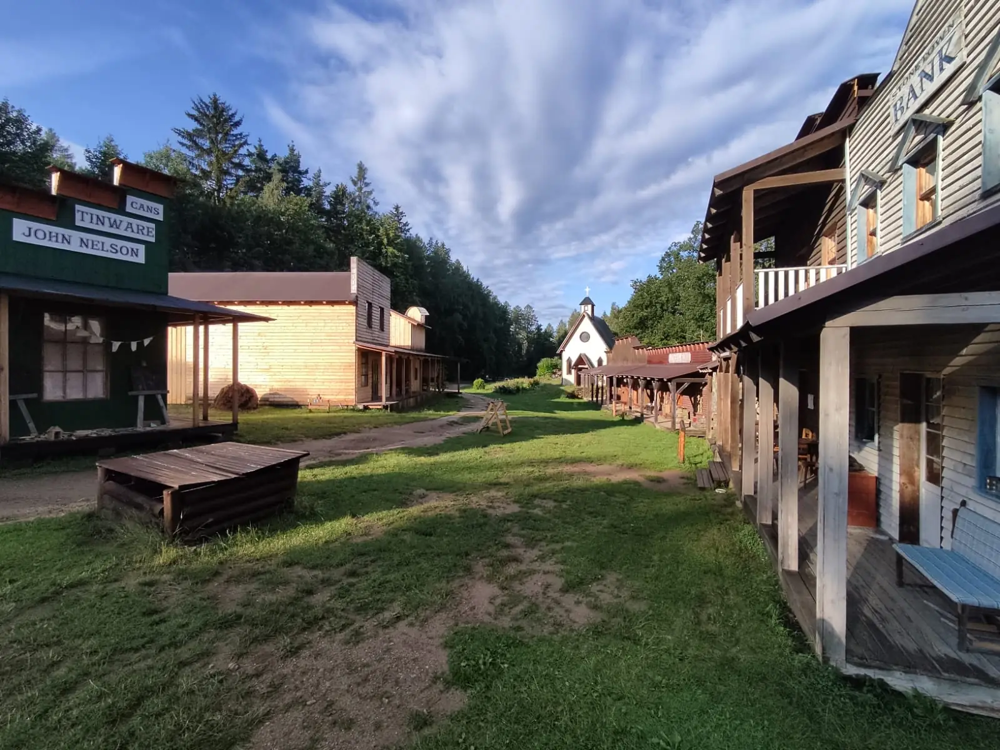

Výprava na Divoký západ začíná u Humpolce
Stonetown je westernové městečko v lese. Děti tu střílí z luku, hází lasem a rýžují zlato. Dospělí to obvykle zkusí taky.

Než vyrazíte
V roce 2026 je pro veřejnost dočasně zavřeno
Sezónu 2027 sem doplníme, jakmile bude jasná. Školy, oddíly a skupiny se na termín mohou ptát už teď.
Zeptat se na termín- Vstupné
- 100 Kč
- Děti do 120 cm
- zdarma
- Parkování
- zdarma
- Na návštěvu
- 2,5 hodiny
Co si zkusíte
Osm stanovišť a u každého někdo, kdo poradí nebo to předvede.
-
Luk
Střelba na terč pro děti i dospělé.
-
Tomahawk a nože
Hod na dřevěný terč.
-
Laso a bič
Ukážeme, jak laso roztočit.
-
Podkova
Hod podkovou na kolík.
-
Rýžování zlata
Pánev, voda a trpělivost.
-
Střelnice
Na plechovky z dobových zbraní.
-
Dílny
Kožený váček, přívěsek, provaz nebo ruční papír.
-
Muzeum
Jak se osidloval Divoký západ.
Výlety, tábory a akce pro skupiny
Vyberte program a rovnou uvidíte dny, kdy je místo. Rezervace je potřeba vždy, jídlo zařídíme po domluvě.
Termíny a kapacity jsou v téhle ukázce vzorové. Ceny školních programů vycházejí z dřívějších sezón.
Poptávka termínu
Formulář se přizpůsobí programu, který vyberete. Hlídá velikost skupiny a rovnou počítá odhad ceny.
Program 2026
Takhle vypadal poslední vyhlášený rok. Termíny na rok 2027 doplníme.
Jak se k nám dostanete
Autem
Z dálnice D1 sjeďte na exitu 90 u Humpolce. Dál vás na parkoviště dovedou cedule Stonetown.
Vlakem
Vystupte na zastávce Kamenice u Humpolce na trati Havlíčkův Brod – Humpolec a jděte po modré turistické značce.